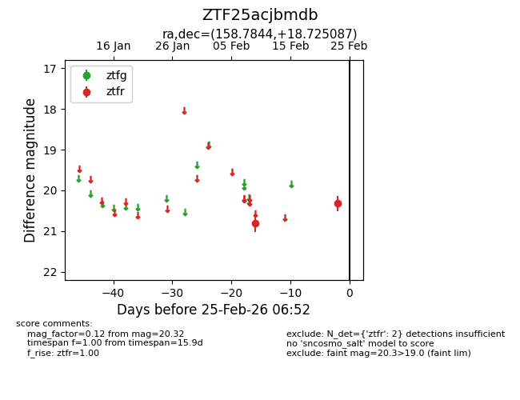
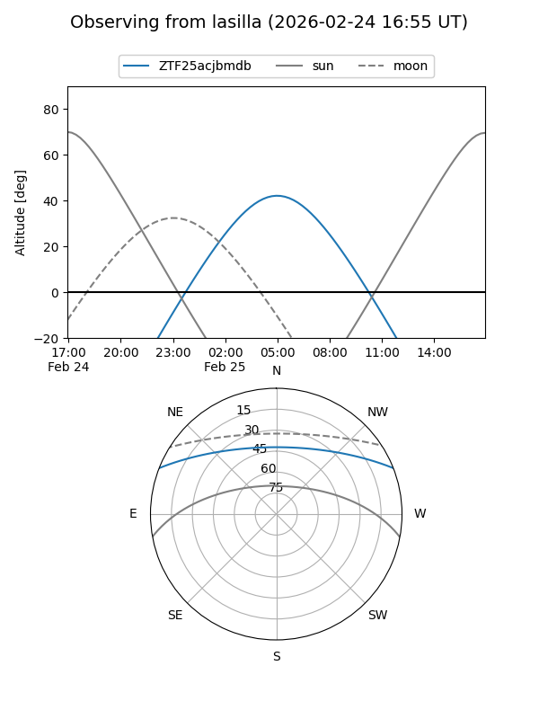
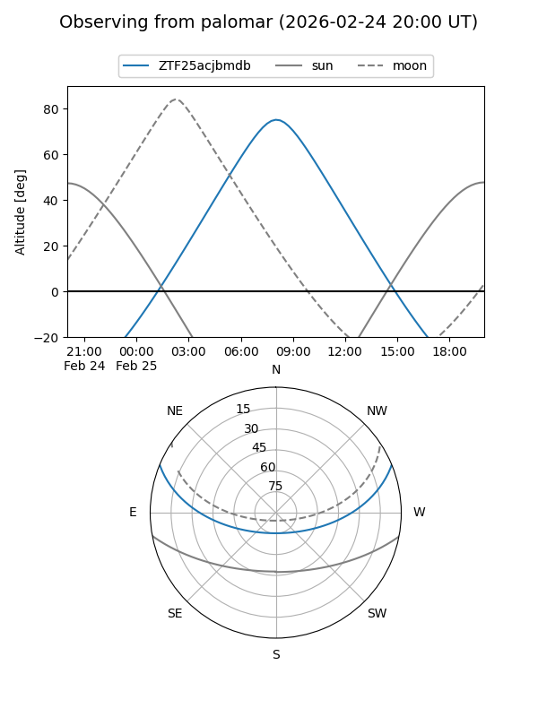

ZTF25acjbmdb
Target ZTF25acjbmdb at 2026-02-25 06:53
Aliases and brokers:
FINK: link
Lasair: link
ALeRCE: link
alt names
ZTF25acjbmdb (ztf,fink_ztf)
Coordinates:
equatorial (ra, dec) = 158.7844,+18.72509
equatorial (HMS+DMS) = 10:35:08.25,+18:43:30.31
galactic (l, b) = (220.6582,+57.62320)
Flags:
Photometry:
last ztfr=20.32
2 ztfr detections
Lightcurve

Visibility


Additional plots